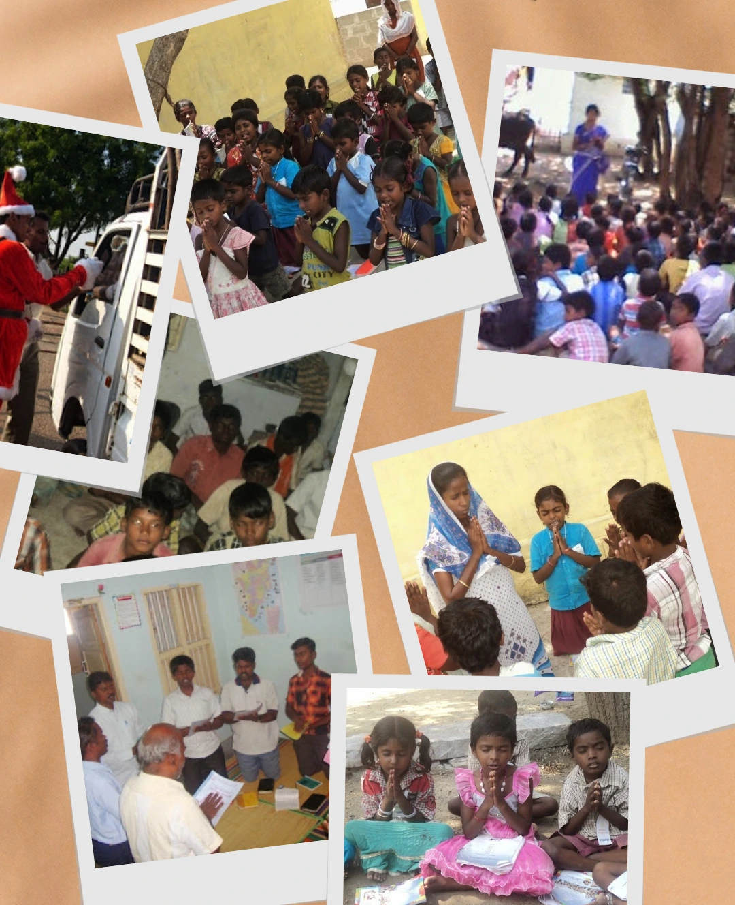
Prayer Support
(+91) 936-77-52-709
10K+
Children's Reached
2K+
Villages Reached
LRM - India
Life Redemption Mission - India
We praise God who gives the wonderful opportunity to publish our ministries activities and proclaim the Gospel through this website. Go through it and get the blessings of God.
25+
Years In Ministry
50K+
People Reached
20+
Active Workers
Proclaiming the Lord and Saviour Jesus Christ Since 2002
In order to have revival in India and churches, to meet children, adults, women through this mission we are working hard.
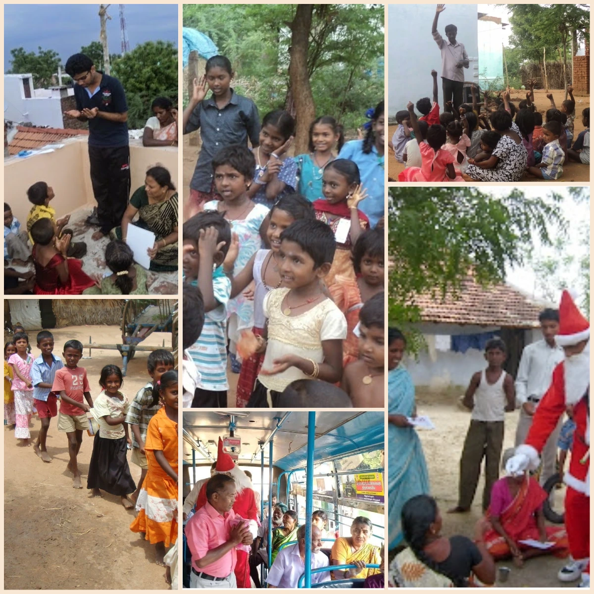
Go to Gallery!
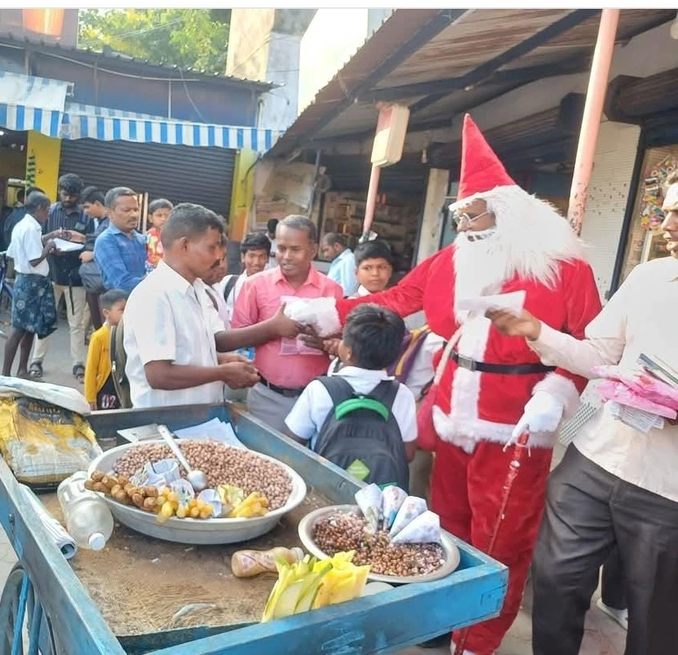
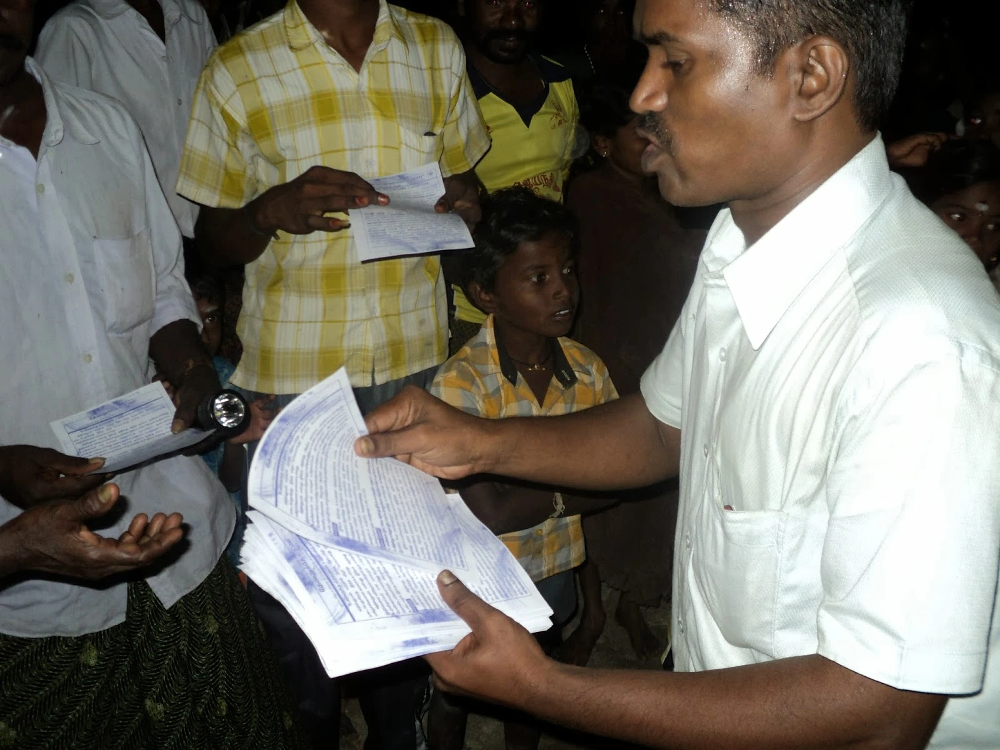
Children's Ministry
Teaching children to know, love, and follow Jesus. Nurturing children through God’s Word and prayer
Reaching Children with the Love of Christ
Building Young Lives on God’s Word
Shaping Tomorrow’s Leaders in Christ
Leading Children into a Life with Jesus
56+
Villages Reached Every Week
20+
Camps Conducted Every Year
GOSPEL OUTREACH
Proclaiming Christ Where He Is Not Known
Sharing Good News
Reached the Unreached!
Through village outreaches, open-air meetings, home visits, and personal evangelism, we proclaim the Gospel of Jesus Christ in unreached and spiritually needy areas. Many lives have been saved, baptized, and discipled through these outreaches, bringing glory to God.
Serving children, youth, and tribal communities
Reaching villages and forests of India with prayer, discipleship, and church planting.
Serving Christ through evangelism, training, and compassionate outreach.
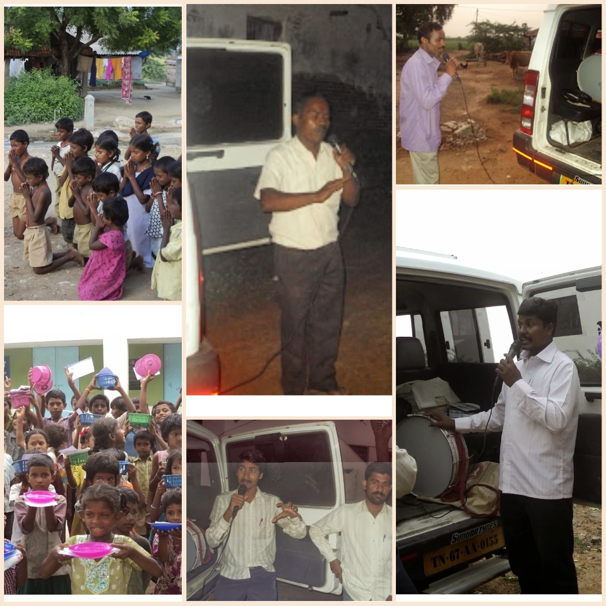
Men’s Hostel Outreach
Providing safe shelter, spiritual guidance, and life discipline for men to grow in faith and responsibility.
15+
Hostels
200+
Students
Tribal Community Outreach
Sharing the Gospel among tribal communities while offering care, education support, and practical help.
8+
Communities
200+
Tribals Reached
Rehabilitation Centre
Restoring vulnerable children through love, education, counseling, and Christ-centered care.
4+
Centers
100+
Children's Reached
Disaster Relief Outreach
Responding to emergencies with practical aid, prayer, and the love of Christ to restore hope and dignity.
400+
Villages New Reached
4000+
People Reached
Outreach in Jail
Bringing hope, repentance, and the message of salvation to prisoners through prayer and God’s Word.
6+
Jails
50+
People Reached
Village Gospel Outreach
Reaching rural villages with prayer, personal evangelism, and the message of salvation in Jesus Christ.
2K+
Villages Reachced
50K+
People Reached
Be a Part of Our Mission
Join us as we proclaim the Gospel, serve the needy, and transform lives through Christ-centered ministry.
Join UsOur Ministries
Proclaiming the Good News of Jesus Christ in remote and unreached communities.
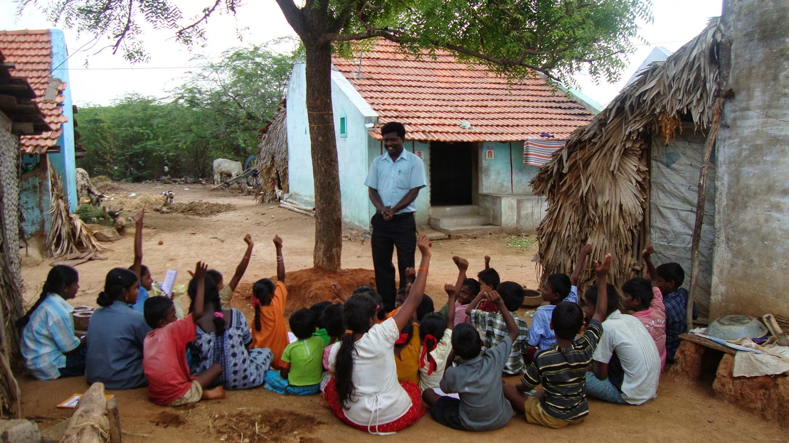
Children’s Ministry
Teaching children God’s Word through Bible lessons, songs, prayer, and loving care in villages and communities.
Learn More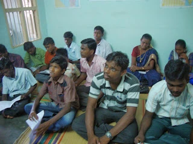
Youth Ministry
Guiding young people to grow in faith, worship, leadership, and Christ-centered living through fellowship and discipleship.
Learn More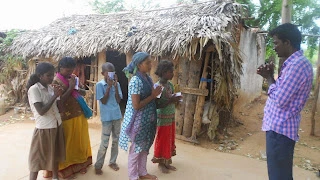
Tribal Ministry
Reaching tribal communities with the Gospel while providing education support, counseling, and compassionate assistance.
Learn More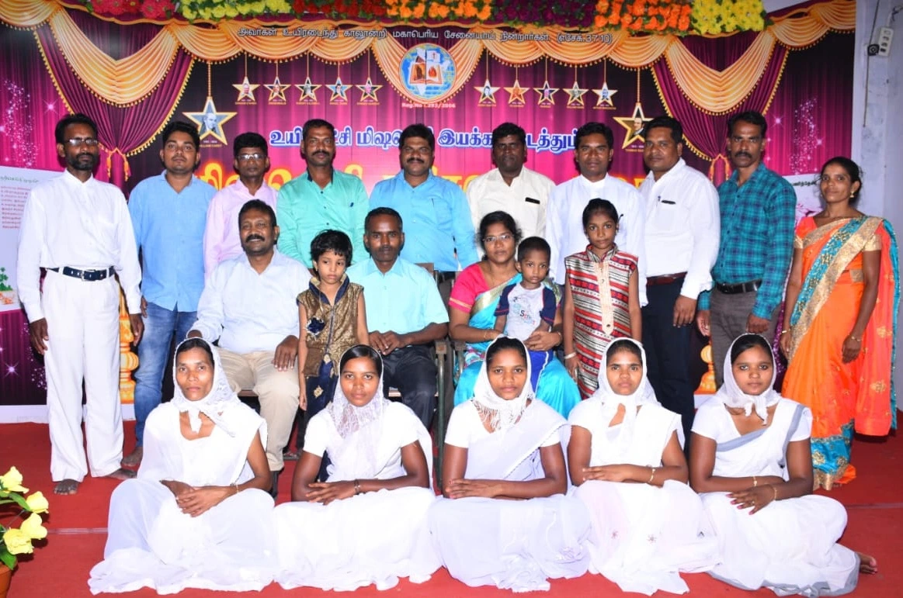
Church Planting Ministry
Evangelizing unreached areas, discipling new believers, and establishing local churches rooted in God’s Word.
Learn More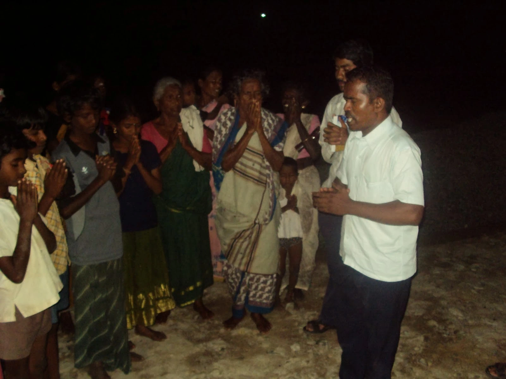
Gospel Outreach Ministry
Proclaiming the Good News of Jesus Christ through village visits, prayer meetings, and personal evangelism.
Learn More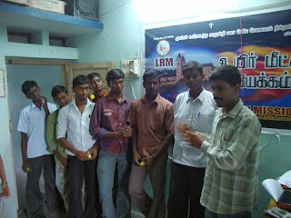
Training & Leadership Ministry
Equipping pastors, evangelists, and volunteers with biblical teaching and practical ministry skills.
Learn MoreLRM News
Latest Ministry Updates
Updates, Testimonies, and Progress
Stay informed about what God is doing through Life Redemption Mission in villages, tribal areas, and new mission fields.
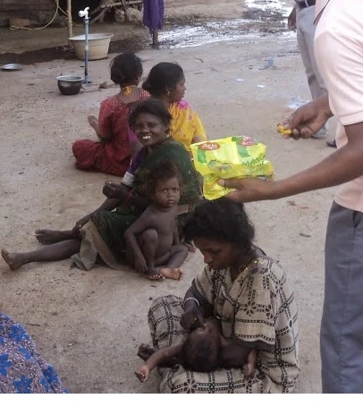
New Tribal Outreach Launched
Tribal Community Ministry
Ministry Update
Remote Villages
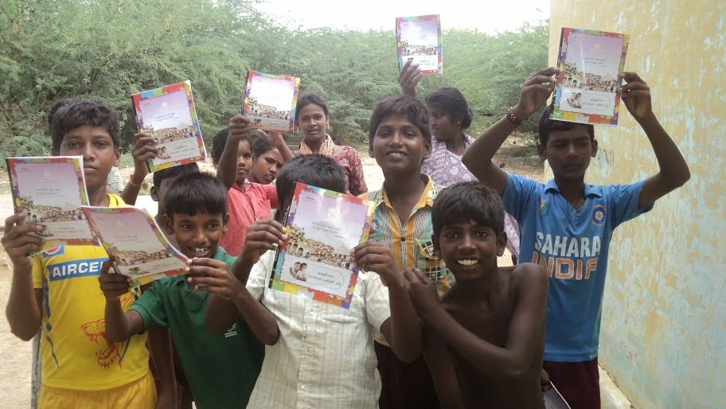
VBS Successfully Conducted
Children’s Ministry
Program Update
Multiple Villages
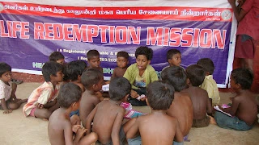
Christmas Outreach Celebrated
Seasonal Gospel Outreach
Special Event
December Outreach
Life Relief Moral Trust
Life Relief Moral Trust delivers education, guidance, skill training, and medical support with compassion and purpose. Our dedicated team is committed to empowering individuals and families toward a hopeful and self-reliant future.
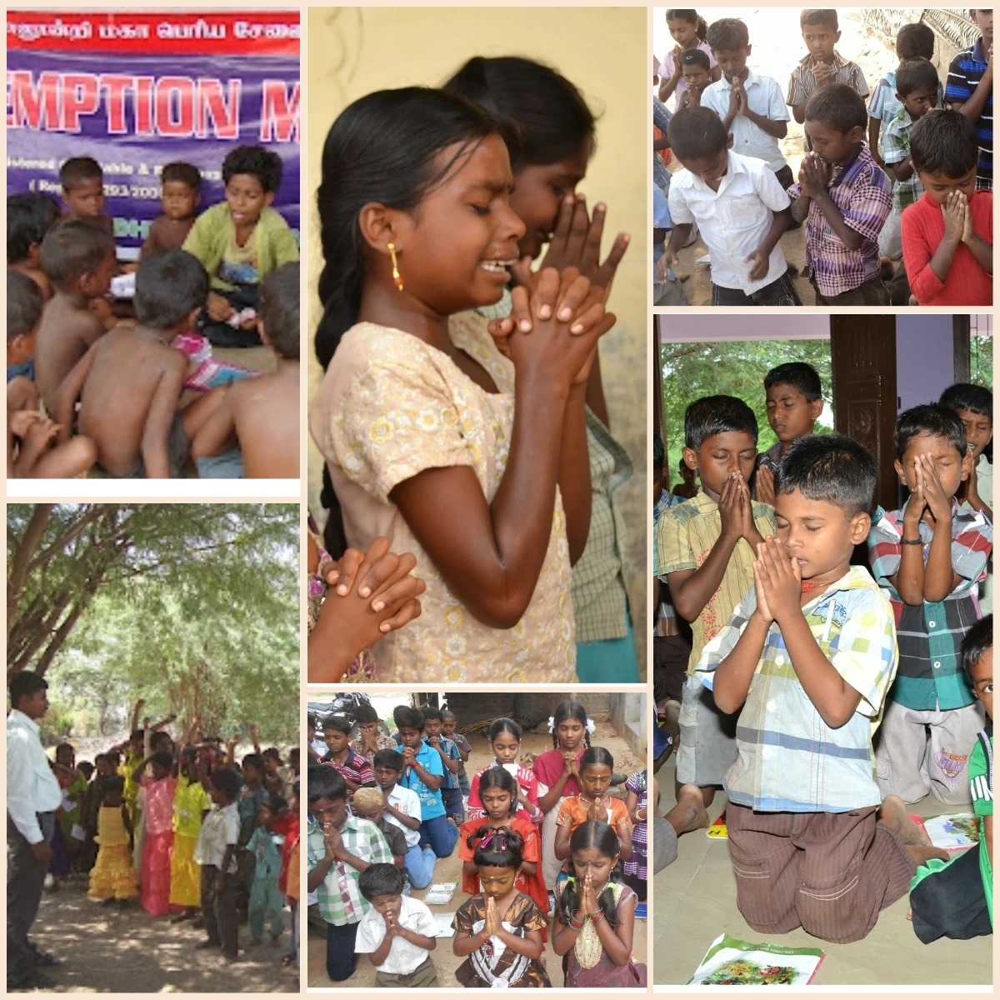
10+
Years of Service
500+
Lives Supported
5+
Community Programs
20+
Dedicated Volunteers
Tuition Center
Quality academic support with caring teachers focused on strong foundations and student success.
Learn MoreTailoring Class
Practical tailoring training empowering individuals with skills for self-employment and income.
Learn MoreMedical Camp
Free medical camps providing basic health checkups, care, and awareness for communities.
Learn More